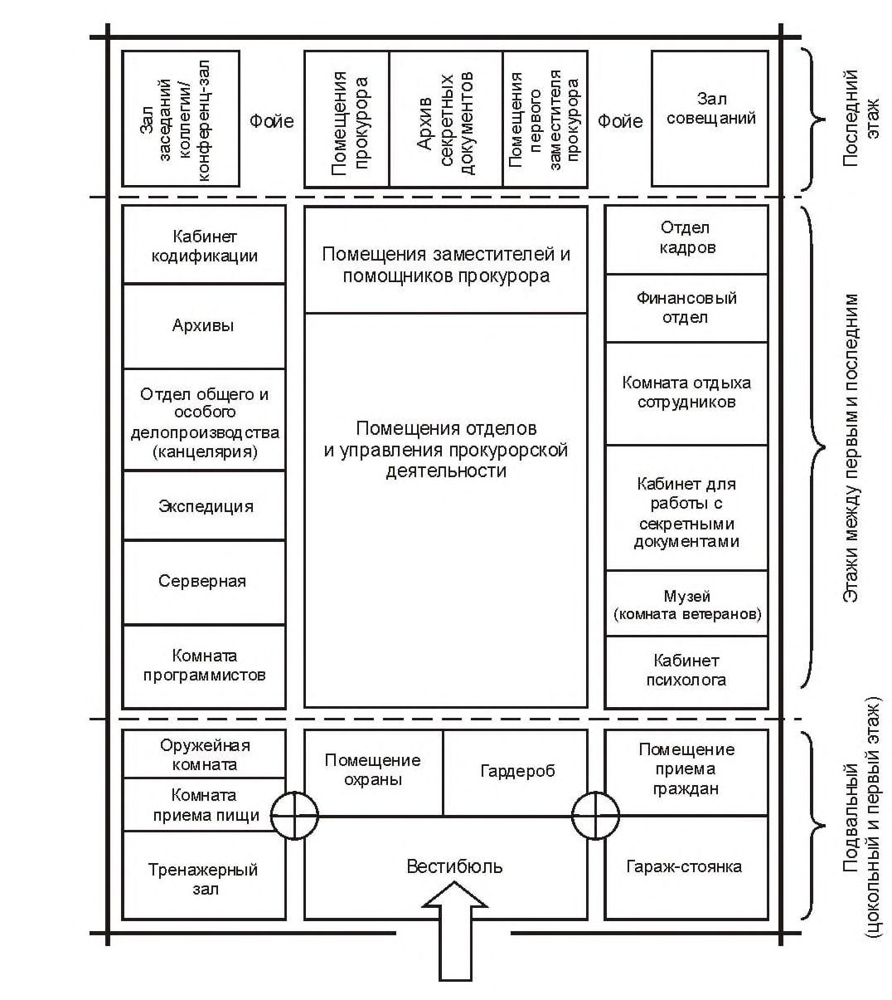

СП 458.1325800.2019 «Здания прокуратур. Правила проектирования»
О документе: разработчики, утверждение, регистрация, ключевые слова
«Проект» вторая редакция
СВОД ПРАВИЛ
СП 458.1325800.2019
1 ИСПОЛНИТЕЛЬ - Акционерное общество «Центральный научноисследовательский и проектно-экспериментальный институт промышленных зданий и сооружений - ЦНИИПромзданий» (АО «ЦНИИПромзданий»)
2 ВНЕСЕН Техническим комитетом по стандартизации ТК 465 «Строительство»
3 ПОДГОТОВЛЕН к утверждению Департаментом градостроительной деятельности и архитектуры Министерства строительства и жилищнокоммунального хозяйства Российской Федерации (Минстрой России)
4 УТВЕРЖДЕН приказом Министерства строительства и жилищнокоммунального хозяйства Российской Федерации от 25 ноября 2019 г. № 728/пр и введен в действие с 26 мая 2020 г.
5 ЗАРЕГИСТРИРОВАН Федеральным агентством по техническому регулированию и метрологии (Росстандарт)
6 ВВЕДЕН ВПЕРВЫЕ
В случае пересмотра ( замены ) или отмены настоящего свода правил соответствующее уведомление будет опубликовано в установленном порядке. Соответствующая информация, уведомление и тексты размещаются также в информационной системе общего пользования - на официальном сайте разработчика ( Минстрой России ) в сети Интернет
© Минстрой России, 2019
Настоящий нормативный документ не может быть полностью или частично воспроизведен, тиражирован и рассмотрен в качестве официального издания на территории Российской Федерации без разрешения Минстроя России
Дата введения - 2020-05-26
Введение
Настоящий свод правил разработан в целях обеспечения соблюдения требований Федерального закона от 30 декабря 2009 г. № 384-ФЗ «Технический регламент о безопасности зданий и сооружений». Кроме того, применение настоящего свода правил обеспечивает соблюдение Федерального закона от 22 июля 2008 г. № 123-ФЗ «Технический регламент о требованиях пожарной безопасности» и сводов правил системы противопожарной защиты.
Требования настоящего свода правил разработаны с учетом опыта проектирования и современного этапа развития деятельности прокуратур, направлены на повышение уровня комфорта и безопасности реализации надзорных функций, более полного соответствия проектируемых зданий прокуратур их функциональному назначению, на повышение качества их проектирования.
Разработка свода правил выполнена авторским коллективом АО «ЦНИИПромзданий» (ответственный исполнитель -канд. архитектуры Д.К. Лейкина , исполнители - канд. архитектуры Т.П. Лунева , главный архитектор проекта Л.И. Грознов ).
ЗДАНИЯ ПРОКУРАТУР Правила проектирования
Buildings of prosecutors. Design rules
| Руководитель разработки | Генеральный директор | ________________ | Н.Г. Келасьев |
|---|---|---|---|
| Исполнитель | Зам. Генерального Директора, Главный архитектор | _________________ | Д.К. Лейкина |
| Руководитель АСМ- 3 | ________________ | Т.П. Лунева | |
| Гл. архитектор проекта | ________________ | Л.И. Грознов |
1Область применения
2Нормативные ссылки
В настоящем своде правил использованы нормативные ссылки на следующие документы:
ГОСТ 27751-2014 Надежность строительных конструкций и оснований. Основные положения
ГОСТ 30331.1-2013 (IEC 60364-1:2005) Электроустановки низковольтные. Часть 1. Основные положения, оценка общих характеристик, термины и определения
ГОСТ 30494-2011 Здания жилые и общественные. Параметры микроклимата в помещениях
ГОСТ 33652-2015 (EN 81-70:2003) Лифты пассажирские. Технические требования доступности, включая доступность для инвалидов и других маломобильных групп населения
СП 1.13130.2009 Системы противопожарной защиты. Эвакуационные пути и выходы (с изменением № 1)
СП 3.13130.2009 Системы противопожарной защиты. Система оповещения и управления эвакуацией людей при пожаре. Требования пожарной безопасности
СП 4.13130.2013 Системы противопожарной защиты. Ограничение распространения пожара на объектах защиты. Требования к объемнопланировочным и конструктивным решениям (с изменением № 1)
СП 5.13130.2009 Системы противопожарной защиты. Установки пожарной сигнализации и пожаротушения автоматические. Нормы и правила проектирования (с изменением № 1)
СП 6.13130.2013 Системы противопожарной защиты. Электрооборудование. Требования пожарной безопасности
СП 7.13130.2013 Отопление, вентиляция и кондиционирование. Требования пожарной безопасности
СП 30.13330.2016 «СНиП 2.04.01-85* Внутренний водопровод и канализация зданий» (с изменением № 1)
СП 42.13330.2016 «СНиП 2.07.01-89* Градостроительство. Планировка и застройка городских и сельских поселений» (с изменением № 1)
СП 44.13330.2011 «СНиП 2.09.04-87* Административные и бытовые здания» (с изменениями № 1, № 2)
СП 51.13330.2011 «СНиП 23-03-2004 Защита от шума» (с изменением № 1)
СП 52.13330.2016 «СНиП 23-05-95* Естественное и искусственное освещение»
СП 59.13330.2016 «СНиП 35-01-2001 Доступность зданий и сооружений для маломобильных групп населения»
СП 60.13330.2016 «СНиП 41-01-2003 Отопление, вентиляция и кондиционирование воздуха» (с изменением № 1)
СП 89.13330.2016 «СНиП II-35-76 Котельные установки»
СП 113.13330.2016 «СНиП 21-02-99* Стоянки автомобилей» (с изменением № 1)
СП 118.13330.2012 «СНиП 31-06-2009 Общественные здания и сооружения» (с изменениями № 1, № 2, № 3)
СП 124.13330.2012 «СНиП 41-02-2003 Тепловые сети»
СП 132.13330.2011 Обеспечение антитеррористической защищенности зданий и сооружений. Общие требования проектирования
СП 133.13330.2012 Сети проводного радиовещания и оповещения в зданиях и сооружениях. Нормы проектирования (с изменением № 1)
СП 134.13330.2012 Системы электросвязи зданий и сооружений. Основные положения проектирования (с изменением № 1)
СП 136.13330.2012 Здания и сооружения. Общие положения проектирования с учетом доступности для маломобильных групп населения (с изменением № 1)
СП 140.13330.2012 Городская среда. Правила проектирования для маломобильных групп населения (с изменением № 1)
СП 256.1325800.2016 Электроустановки жилых и общественных зданий. Правила проектирования и монтажа (с изменениями № 1, № 2, № 3)
СанПиН 2.2.1/2.1.1.1278-03 Гигиенические требования к естественному, искусственному и совмещенному освещению жилых и общественных зданий
СанПиН 2.2.2/2.4.1340-03 Гигиенические требования к персональным электронно-вычислительным машинам и организации работы
Примечание - При пользовании настоящим сводом правил целесообразно проверить действие ссылочных документов в информационной системе общего пользования - на официальном сайте федерального органа исполнительной власти в сфере стандартизации в сети Интернет или по ежегодному информационному указателю «Национальные стандарты», который опубликован по состоянию на 1 января текущего года, и по выпускам ежемесячного информационного указателя «Национальные стандарты» за текущий год. Если заменен ссылочный документ, на который дана недатированная ссылка, то рекомендуется использовать действующую версию этого документа с учетом всех внесенных в данную версию изменений. Если заменен ссылочный документ, на который дана датированная ссылка, то рекомендуется использовать версию этого документа с указанным выше годом утверждения (принятия). Если после утверждения настоящего свода правил в ссылочный документ, на который дана датированная ссылка, внесено изменение, затрагивающее положение, на которое дана ссылка, то это положение рекомендуется применять без учета данного изменения. Если ссылочный документ отменен без замены, то положение, в котором дана ссылка на него, рекомендуется применять в части, не затрагивающей эту ссылку. Сведения о действии сводов правил целесообразно проверить в Федеральном информационном фонде стандартов.
3Термины и определения
В настоящем своде правил применены термины по СП 118.13330, а также следующий термин с соответствующим определением:
- 3.1сеть зданий прокуратуры
- Группа органов прокуратуры Российской Федерации, построенная по административно-территориальному признаку.
4Общие положения
- прокуратуры субъектов Российской Федерации и приравненные к ним прокуратуры (первый тип);
- прокуратуры городов, городских и сельских районов (в том числе межрайонные) и приравненные к ним прокуратуры (второй тип).
Территориальные прокуратуры - прокуратуры общего назначения.
К прокуратурам первого типа из числа территориальных прокуратур относятся прокуратуры республик, краев, областей, автономных округов, городов федерального значения (г. Москва, г. Санкт-Петербург, г. Севастополь) и отдельных крупных городов * (по решению Генеральной прокуратуры Российской Федерации).
К прокуратурам второго типа из числа территориальных прокуратур относятся прокуратуры городских и сельских районов, прокуратуры городов, не являющихся районными центрами, городов, не имеющих районного деления.
\_\_\_\_\_\_\_\_\_\_\_\_\_\_\_\_\_\_\_\_\_
* Классификация городов по СП 42.13330.
СП .1325800.2019
Специализированные прокуратуры ведут работу применительно к отдельным отраслям и направлениям народнохозяйственной деятельности:
- прокуратуры по надзору за исполнением законов на особо режимных объектах;
- прокуратуры по надзору за соблюдением законов в исправительных учреждениях;
- природоохранные прокуратуры;
- транспортные.
В зависимости от масштабов и функций деятельности специализированные прокуратуры по решению Генеральной прокуратуры Российской Федерации могут быть приравнены как к первому, так и ко второму типу.
Военные прокуратуры осуществляют свою деятельность в Вооруженных силах Российской Федерации.
К военным прокуратурам первого типа, относятся прокуратуры военных округов (Западного, Центрального, Восточного, Южного), флотов (Черноморского, Балтийского, Северного, Тихоокеанского) и некоторых родов войск (например, Ракетных войск стратегического назначения).
К военным прокуратурам второго типа относятся прокуратуры воинских соединений, гарнизонов и частей.
Классификация зданий прокуратур приведена в таблице А.1 приложения А.
СП .1325800.2019
5Требования к размещению и организации земельного участка
Здания территориальных прокуратур второго типа рекомендуется размещать на территориях поднадзорных им городских или сельских районов. Межрайонные (окружные) прокуратуры, обслуживающие несколько городских или сельских районов, рекомендуется размещать, соблюдая максимальную равномерную близость к ним всех поднадзорных территорий.
Для зданий территориальных прокуратур наиболее целесообразным следует считать размещение в едином комплексе или поблизости от зданий других прокуратур, судов, следственных и правоохранительных органов. В особой степени такие взаимосвязи важны для зданий территориальных прокуратур второго типа.
- парковка автомобильного транспорта;
- хозяйственная;
- зеленая;
- площадь застройки здания.
- служебного автомобильного транспорта прокуратуры;
- личного транспорта сотрудников прокуратуры;
- личного транспорта посетителей.
Потребность в количестве машино-мест следует определять:
- служебного автотранспорта прокуратуры - исходя из количества выделяемых прокуратуре служебных транспортных средств;
- личного транспорта сотрудников прокуратуры - из расчета 50 % количества сотрудников;
- личного транспорта посетителей - из расчета 10 % количества сотрудников прокуратуры.
Общую площадь парковки и ее отдельных зон, предназначенных для разных категорий транспорта, следует определять с учетом СП 113.13330.
В зоне парковки транспорта посетителей прокуратуры в числе прочих следует предусматривать машино-места для инвалидов в соответствии с СП 59.13330.
СП .1325800.2019
Допускается устройство встроенных, пристроенных или подземных гаражей-стоянок служебного автомобильного транспорта, в том числе размещаемых в подвальном или цокольном этаже здания.
Зоны парковки транспорта сотрудников и посетителей рекомендуется разделять планировочными средствами.
Зона парковки должна размещаться со стороны городской улицы (или магистрали) и иметь удобный въезд и выезд.
Хозяйственную зону не рекомендуется размещать со стороны главного фасада здания прокуратуры.
Площадь хозяйственной зоны рекомендуется принимать 40-60 м² .
Площадь зеленой зоны рекомендуется принимать из расчета 1,5-2,0 м² на одного сотрудника прокуратуры, но не менее 25 м² .
6Объемно-планировочные решения
- зоны сотрудников прокуратуры, проход в помещения этой зоны здания осуществляется через контрольно-пропускной пункт;
- доконтрольной зоны, в которую предусмотрен доступ посетителей.
СП .1325800.2019
В доступную для посетителей зону входят: вестибюль, гардероб, комната для приема граждан, комната охраны.
7Функциональные группы помещений
СП .1325800.2019
- прокурорской деятельности;
- обеспечения прокурорской деятельности;
- вспомогательных и обслуживающих помещений.
Таблица 7.1 Состав помещений прокуратуры первого типа
| Наименование помещений | Критерии необходи- мости | Примечание |
|---|---|---|
| Вестибюль | ● | |
| Гардероб | ○ | |
| Помещение охраны и пожарного поста | ● | |
| Комната приема граждан | ● | |
| Кабинет прокурора субъекта Российской Федерации, при нем: - приемная | ● | |
| ● | ||
| - комната отдыха (с уборной) | ● | |
| Кабинет первого заместителя прокурора, при нем: | ● | |
| - приемная | ● | |
| - комната отдыха (с уборной) | ● | |
| Кабинеты заместителей прокуроров | ● | |
| Приемные при кабинетах заместителей прокуроров | ● | Могут быть общие на два кабинета |
| Комнаты отдыха (с уборными) при кабинетах заместителей прокуроров | ○ | |
| Кабинет старшего помощника прокурора | ● | |
| Приемная при кабинете старшего помощника прокурора | ○ | Могут быть общие на два кабинета |
| Кабинеты помощников прокурора | ● | |
| Кабинеты начальников управлений | ● | |
| Кабинеты начальников отделов прокурорской деятельности | ● | |
| Рабочие помещения государственных служащих | ● | |
| Кабинеты прокуроров в составе отделов | ● | |
| Комната отдыха дежурного прокурора | ● | |
| Отдел общего и особого делопроизводства (канцелярия) | ● | |
| Помещения отделов кадров | ● | |
| Помещения финансового отдела | ● | |
| Архив документов | ● | В составе помещений отдела общего и особого делопроизводства (канцелярии) |
| Архив секретных документов | ● | |
| Архив вещественных доказательств | ● |
Продолжение таблицы 7.1
| Наименование помещений | Критерии необходи- мости | Примечание |
|---|---|---|
| Архив личных дел сотрудников | ● | |
| Электронный архив | ● | |
| Кабинет кодификации | ● | |
| Экспедиция | ● | |
| Комната водителей | ● | |
| Комната обслуживающего персонала (уборщицы, истопник, ремонтник и др.) | ● | |
| Комната отдыха охранников | ○ | |
| Комната отдыха сотрудников (психологической разгрузки) | ○ | |
| Комната приема пищи | ● | |
| Зал совещаний | ● | |
| Зал заседаний коллегии/конференц-зал | ● | |
| Комната президиума при конференц-зале | ● | |
| Фойе при конференц-зале | ● | |
| Серверная общая | ● | |
| Серверная отдела статистики | ● | |
| Кабинет для работы с секретными документами | ● | |
| Тренажерный зал с вспомогательными помещениями | ● | |
| Встроенный или пристроенный гараж- стоянка | ● | |
| Помещение копировально-множительной техники | ○ | |
| Столовая (кафе) с подсобными помещениями | ○ | |
| Комната чистки оружия | ● | |
| Комната хранения оружия | ● | |
| Комнаты программистов | ● | |
| Тир с дистанцией 25 м | ○ | |
| Склад форменного обмундирования и обуви | ● | |
| Кладовая оргтехники | ● | |
| Кладовая канцелярских принадлежностей | ● | |
| Кладовая автозапчастей | ○ | |
| Кладовая мебели | ○ | |
| Кладовая бытовой химии и уборочного инвентаря | ● | |
| Музей (комната ветеранов) | ○ | |
| Кабинет психолога | ● | |
| Аппаратная связи | ○ |
Примечание - В настоящей таблице применены следующие условные обозначения:
● - необходимость помещения предусматривается;
○ - необходимость помещения устанавливается заданием на проектирование.
7.7Состав помещений прокуратур второго типа приведен в таблице 7.2.
Таблица 7.2 Состав помещений прокуратур второго типа
| Наименование помещений | Критерии необходи- мости | Примечание |
|---|---|---|
| Вестибюль | ● | |
| Гардероб | ○ | Рекомендуется при числе сотрудников пять человек и более |
| Помещение охраны и пожарного поста | ○ | При наличии штатной единицы охранника |
| Комната приема граждан | ● | |
| Кабинет прокурора | ● | |
| Приемная при кабинете прокурора | ● | |
| Комната отдыха при кабинете прокурора (с уборной) | ● | |
| Кабинет первого заместителя прокурора | ● | |
| Приемная при комнате первого заместителя прокурора | ○ | Может быть общая с приемной прокурора |
| Кабинет старшего помощника прокурора | ● | |
| Кабинет помощника прокурора | ● | |
| Кабинеты сотрудников | ● | На одно рабочее место |
| Канцелярия | ● | |
| Архив документов | ● | |
| Архив вещественных доказательств | ● | |
| Кабинет кодификации | ○ | Может быть совмещен с архивом |
| Кабинет для работы с секретными документами | ● | |
| Комната приема пищи | ● | |
| Комната отдыха сотрудников (психологической разгрузки) | ○ | |
| Зал совещаний | ● | |
| Серверная | ● | |
| Кладовая канцелярских товаров и хозяйственных принадлежностей | ○ | |
| Встроенный или пристроенный гараж- стоянка | ● | |
| Комната для копирования документов | ○ | |
| Комната уборщицы/уборочного инвентаря | ● |
СП .1325800.2019
Площадь конференц-зала и фойе при нем следует принимать пунктам по 5.24 и 5.26 СП 118.13330.2012. При конференц-зале следует предусматривать кладовую для хранения материалов и инвентаря площадью, определяемой из расчета 0,1 м² на одно место в зале, но не менее 9 м² .
Помещения информационно-технического обеспечения должны быть оборудованы согласно СанПиН 2.2.2/2.4.1340.
Таблица 7.3 -Площади помещений руководства прокуратур
| Площадь помещений, м² , при штатной численности сотрудников прокуратуры, чел. | Площадь помещений, м² , при штатной численности сотрудников прокуратуры, чел. | Площадь помещений, м² , при штатной численности сотрудников прокуратуры, чел. | Площадь помещений, м² , при штатной численности сотрудников прокуратуры, чел. | Площадь помещений, м² , при штатной численности сотрудников прокуратуры, чел. | Площадь помещений, м² , при штатной численности сотрудников прокуратуры, чел. | |
|---|---|---|---|---|---|---|
| Наименования помещений | для прокуратуры первого типа | для прокуратуры первого типа | для прокуратуры первого типа | для прокуратуры второго типа | для прокуратуры второго типа | для прокуратуры второго типа |
| до 100 | 101-200 | 201-300 и более | до 10 | 11-20 | 21-30 и более | |
| Кабинет прокурора | 30 | 36 | 42 | 15 | 18 | 24 |
| Приемная прокурора | 18 | 18 | 24 | 12 | 15 | 18 |
| Комната отдыха прокурора (с уборной) | 18 | 18 | 24 | 12 | 12 | 12 |
| Кабинет первого заместителя прокурора | 24 | 24 | 30 | 12 | 15 | 18 |
| Приемная первого заместителя прокурора | 18 | 18 | 24 | 12 | 12 | 15 |
| Комната отдыха первого заместителя прокурора (с уборной) | 12 | 12 | 15 | - | - | - |
| Кабинет заместителя прокурора | 24 | 24 | 30 | 12 | 15 | 18 |
| Приемная заместителя прокурора | 18 | 18 | 24 | - | - | - |
| Комната отдыха заместителя прокурора (с уборной) | 12 | 12 | 15 | - | - | - |
| Кабинет старшего помощника прокурора | 15 | 18 | 18 | 12 | 12 | 12 |
| Приемная старшего помощника прокурора | 12 | 12 | 15 | - | - | - |
| Кабинет помощника прокурора | 15 | 18 | 18 | 12 | 12 | 12 |
| Кабинет начальника управления | 18 | 18 | 24 | - | - | - |
| Кабинет начальника отдела (на правах управления) | 15 | 15 | 18 | - | - | - |
| Кабинет начальника отдела (в составе управления) | 12 | 15 | 15 | 12 | 12 | 12 |
7.14Расчетные значения площади помещений зданий прокуратур приведены в таблице 7.4.
Таблица 7.4 Расчетные показатели площади помещений зданий прокуратур
| Наименование помещений | Площадь, м² | Примечание |
|---|---|---|
| Кабинеты прокуроров в составе отделов | Помещение не менее 12 м² | |
| Кабинеты специалистов | 6 м² на одно рабочее место | По СП 118.13330 |
| Помещение копировально- множительной техники | 9 м² на один аппарат | При размещении каждого последующего - плюс 6 м² на аппарат |
| Архив документов | 0,5 м² на одного сотрудника | |
| Архив секретных документов | 0,3 м² на одного сотрудника | |
| Архив личных дел сотрудников | 0,3 м² на одного сотрудника | |
| Архив вещественных доказательств | Помещение не менее 12 м² | |
| Электронный архив носителей | 9 м² на один сервер | |
| Кабинет кодификации | 9 м² на одного сотрудника | |
| Экспедиция | 8 м² на одного сотрудника | |
| Отдел общего и особого делопроизводства (канцелярия) | 8 м² на одного сотрудника | |
| Помещение программистов | 6 м² на одно место | По СП 118.13330 |
| Зал совещаний | 2 м² на одно место | Из расчета 30 %штатной численности сотрудников |
| Зал заседаний коллегии/ конференц-зал | 1,25 м² на одно место | Из расчета 110 %штатной численности сотрудников |
| Фойе | 0,4 м² на одно место в зале | По СП 118.13330 |
| Комната президиума при конференц-зале | Помещение 24 м² |
| Наименование помещений | Площадь, м² | Примечание |
|---|---|---|
| Серверная (общая) | 9 м² на один сервер | |
| Серверная отдела статистики | 9 м² на один сервер | |
| Аппаратная связи | 9 м² на один аппарат | |
| Тренажерный зал | 4,5 м² на один тренажер, но не менее 25 м² | Количество тренажеров определяется заданием на проектирование |
| Комната отдыха сотрудников (психологической разгрузки) | 0,7 м² на одного работника, но не менее 12 м² на помещение | |
| Кабинет психолога | Помещение не менее 12 м² | |
| Комнаты водителей, охранников и обслуживающего персонала | 6,0 м² на одно место, но не менее 9 м² на помещение | По СП 118.13330 |
| Комната приема пищи | 1,5 м² на одно место в комнате, но не менее 15 м² на помещение | Число мест принимается из расчета 25 %числа сотрудников |
| Кладовая канцелярских принадлежностей | 0,3 м² на одного сотрудника, но не менее 15 м² на помещение | |
| Кладовая оргтехники | Не менее 12 м² | |
| Кладовая автозапчастей | Не менее 18 м² | |
| Кладовая мебели | Не менее 12 м² | |
| Склад форменного обмундирования и обуви | Не менее 10 м² | |
| Кладовая бытовой химии и уборочного инвентаря | 0,8 м² на 100 м² полезной площади здания | По СП 118.13330 |
| Комната хранения оружия | Не менее 10 м² | |
| Комната чистки оружия | Не менее 12 м² | |
| Музей (комната ветеранов) | Не менее 12 м² | |
| Вестибюль | 0,3 м² на одного сотрудника | По СП 118.13330 |
Окончание таблицы 7.4
| Наименование помещений | Площадь, м² | Примечание |
|---|---|---|
| Гардероб | 0,15 м² на одного сотрудника | По СП 118.13330 |
| Помещение охраны и пожарного поста | 6 м² на одно место, но не менее 12 м² на помещение | |
| Комната приема посетителей (кабинет дежурного прокурора) | Помещение не менее 12 м² | |
| Встроенный, пристроенный гараж-стоянка | Проектируется по СП 113.13330, 5 | Проектируется по СП 113.13330, 5 |
8Требования безопасности
Гараж-стоянка для служебных автомобилей прокуратуры должен быть охраняемым.
Смежно с турникетом следует устанавливать распашную калитку шириной не менее суммарной ширины дверей эвакуационных выходов.
Требования к осуществлению охраны здания подразделениями войск национальной гвардии Российской Федерации приведены в 7 .
Системы оповещения и управления эвакуацией людей при пожаре следует предусматривать в соответствии с СП 3.13130.
9Требования к внутренней среде и инженерному оснащению зданий
СП .1325800.2019
СП .1325800.2019 гарантированного электроснабжения устанавливается заданием на проектирование. Электротехнические устройства должны удовлетворять требованиям СП 52.13330 в части искусственного освещения, а также ГОСТ 30331.1.
Локальная вычислительная сеть монтируется в составе общей структурированной кабельной системы (для компьютеризации, телефонизации, видеоконференцсвязи и т. п.).
Таблица А.1
| Прокуратуры по направлениям деятельности | Прокуратуры по направлениям деятельности | Прокуратуры по направлениям деятельности | |
|---|---|---|---|
| Типы зданий прокуратур | территориальные (общего назначения) | специализированные | военные |
| Первый | Прокуратуры субъектов Российской Федерации, городов федерального значения | Приравненные к первому типу прокуратуры по надзору за исполнением законов на особо режимных объектах, прокуратуры по надзору за исполнением законов в исправительных учреждениях, природоохранные и транспортные прокуратуры | Прокуратуры военных округов, флотов, родов войск |
| Второй | Прокуратуры городов, городских и сельских районов, межрайонные прокуратуры | Приравненные ко второму типу прокуратуры по надзору за исполнением законов в исправительных учреждениях, природоохранные и транспортные прокуратуры | Прокуратуры воинских соединений, гарнизонов и частей |
АПриложение А. Классификация зданий прокуратур
Приложение Б
Схема функционального зонирования помещений прокуратуры
Рисунок Б.1

ВПриложение В. Примерный состав и площади помещений прокуратур
Таблица В.1 Примерный состав и площади помещений прокуратуры первого типа (на 100 сотрудников)
| Наименование помещений | Площадь, м² | Примечание |
|---|---|---|
| Подразделения прокурорской деятельности | Подразделения прокурорской деятельности | Подразделения прокурорской деятельности |
| Руководство | ||
| Кабинет прокурора | 30 | |
| Приемная прокурора | 18 | |
| Комната отдыха прокурора с уборной | 18 | |
| Кабинет первого заместителя прокурора | 24 | |
| Приемная первого заместителя прокурора | 18 | |
| Кабинеты заместителей прокурора | 48 | 24 м² × 2 |
| Приемная заместителей прокурора | 18 | Общая на два кабинета заместителей |
| Комната отдыха с уборной | 24 | 12 м² × 2 |
| Кабинеты старших помощников прокурора | 150 | 15 м² × 10 |
| Приемная старших помощников прокурора | 18 | Общая на два кабинета старших помощников |
| Кабинет помощника прокурора | 15 | |
| Итого: | 381 | |
| Управления и отделы | Управления и отделы | Управления и отделы |
| Управление по надзору за уголовно- процессуальной и оперативно- розыскной деятельностью | ||
| Кабинет начальника управления | 18 | |
| Отдел по надзору за процессуальной деятельностью органов прокуратуры | ||
| Кабинет начальника отдела | 15 | |
| Кабинеты прокуроров | 72 | 12 м² × 6 |
| Итого: | 105 | |
| Отдел по надзору за процессуальной деятельностью органов дознания и оперативно-розыскной деятельностью | ||
| Кабинет начальника отдела | 15 |
Продолжение таблицы В.1
| Наименование помещений | Площадь, м² | Примечание |
|---|---|---|
| Кабинеты прокуроров | 60 | 12 м² × 5 |
| Итого: | 75 | |
| Управление по надзору за исполнением федерального законодательства | ||
| Кабинет начальника управления | 18 | |
| Отдел по надзору за исполнением прав и свобод граждан | ||
| Кабинет начальника отдела | 15 | |
| Кабинеты прокуроров | 72 | 12 м² × 6 |
| Итого: | 105 | |
| Отдел по надзору за исполнением законодательства в сфере экономики | ||
| Кабинет начальника отдела | 15 | |
| Кабинеты прокуроров | 72 | 12 м² × 6 |
| Итого: | 87 | |
| Отдел по надзору за исполнением законодательства и противодействию коррупции | На правах управления | |
| Кабинет начальника отдела | 15 | |
| Кабинеты прокуроров | 36 | 12 м² × 3 |
| Итого: | 51 | |
| Уголовно-судебный отдел | На правах управления | |
| Кабинеты прокуроров | ||
| 108 | 12 м² × 9 | |
| Итого: | 123 | |
| Отдел правовой статистики | На правах управления | |
| Кабинет начальника отдела | 15 | |
| Кабинеты прокуроров | 48 | 12 м² × 4 |
| Серверная | 15 | |
| Итого: | 78 | |
| Отдел по надзору за исполнением законов о федеральной безопасности, межнациональных отношениях, противодействии экстремизму и терроризму | На правах управления | |
| Кабинет начальника отдела | 15 | |
| Кабинеты прокуроров | 48 | 12 м² × 4 |
| Итого: | 63 |
Продолжение таблицы В.1
| Наименование помещений | Площадь, м² | Примечание |
|---|---|---|
| Подразделения обеспечения прокурорской деятельности | Подразделения обеспечения прокурорской деятельности | Подразделения обеспечения прокурорской деятельности |
| Отдел кадров и государственной службы | ||
| Кабинет начальника | 15 | |
| Комната сотрудников отдела | 12 | |
| Переговорная для приема кандидатов на должность | 12 | |
| Архив личных дел сотрудников | 30 | |
| Кабинеты прокуроров (в составе отделов) | 24 | 12 м² × 2 |
| Итого: | 93 | |
| Отдел общего и особого делопроизводства (канцелярия) | ||
| Кабинет начальника отдела | 15 | |
| Кабинеты сотрудников отдела | 48 | 12 м² × 4 |
| Кабинет кодификации | 18 | |
| Кабинет для работы с секретными документами | 12 | |
| Кабинет делопроизводства | 24 | |
| Экспедиция | 18 | |
| Архив документов | 50 | |
| Архив секретных документов | 12 | |
| Помещение копировально- множительной техники | 24 | |
| Итого: | 221 | |
| Отдел планирования, труда, финансового, бухгалтерского учета и отчетности | ||
| Кабинет начальника отдела | 15 | |
| Кабинеты прокуроров в составе отдела | 24 | 12 м² × 2 |
| Кабинет сотрудников | 18 | |
| Итого: | 57 | |
| Отдел материально-технического обеспечения и транспорта | ||
| Кабинет начальника отдела | 15 | |
| Кабинеты сотрудников | 18 | |
| Кабинет прокурора в составе отдела | 12 | |
| Помещение транспортного обеспечения | 12 | |
| Итого: | 57 |
Продолжение таблицы В.1
| Наименование помещений | Площадь, м² | Примечание |
|---|---|---|
| Вспомогательные и обслуживающие помещения | Вспомогательные и обслуживающие помещения | Вспомогательные и обслуживающие помещения |
| Зал заседаний коллегии/конференц-зал | 138 | |
| Фойе при конференц-зале | 44 | |
| Комната президиума при конференц- зале | 24 | |
| Зал совещаний | 60 | |
| Комната программистов | 24 | |
| Серверная общая | 15 | |
| Аппаратная связи | 15 | |
| Электронный архив | 9 | |
| Комната приема пищи | 45 | На 25 мест |
| Тренажерный зал, при нем: | 25 | |
| - санитарные узлы | 20 | 10 м² × 2 |
| - раздевальные | 16 | 8 м² × 2 |
| Комната хранения оружия | 10 | |
| Комната чистки оружия | 10 | |
| Склад боеприпасов | 10 | |
| Комната отдыха сотрудников (психологической разгрузки) | 18 | |
| Кабинет психолога | 12 | |
| Музей (комната ветеранов) | 24 | |
| Комната обслуживающего персонала | 12 | |
| Кладовая канцелярских принадлежностей | 30 | |
| Кладовая оргтехники | 12 | |
| Кладовая автозапчастей | 12 | |
| Кладовая мебели | 12 | |
| Склад форменного обмундирования и обуви | 20 | |
| Кладовая бытовой химии и уборочного инвентаря | 19 | |
| Уборные: | ||
| - мужские | 12 | Принимаются из расчета |
| - женские | 14 | 50 %мужчин, |
| - комната личной гигиены женщин | 4 | 50 %женщин |
Окончание таблицы В.1
| Наименование помещений | Площадь, м² | Примечание |
|---|---|---|
| Входная группа помещений: - вестибюль - гардероб - универсальная уборная для посетителей (в т. ч. - для | ||
| 36 | Включает зону ожидания посетителей | |
| 15 | ||
| инвалидов) | 5 | |
| - помещение для приема посетителей (кабинет дежурного прокурора) | 12 | На 2 места посетителей |
| - помещение охраны и пожарного поста | 12 | |
| Итого: | 746 | |
| Расчетная площадь | 2242 | |
| Удельная расчетная площадь на одного сотрудника прокуратуры (без обслуживающего персонала) | 22,4 | |
| Удельная общая площадь на одного сотрудника прокуратуры (без обслуживающего персонала) | 30,2 |
Примечания
1 Коэффициент перевода расчетной площади в общую принят 1,35 на основе практики проектирования общественных зданий.
2 Состав и площади помещений здания прокуратуры корректируются в задании на проектирование с учетом градостроительных условий, утвержденной структуры и штатной численности сотрудников прокуратуры.
Таблица В.2 -Примерный состав и площади помещений прокуратуры второго типа (на 30 сотрудников)
| Наименование помещений | Площадь, м² | Примечание |
|---|---|---|
| Помещения прокурорской деятельности | Помещения прокурорской деятельности | Помещения прокурорской деятельности |
| Руководство | ||
| Кабинет прокурора | 24 | |
| Приемная прокурора | 18 | |
| Комната отдыха с уборной | 12 | |
| Кабинет первого заместителя прокурора | 18 | |
| Приемная первого заместителя прокурора | 15 | |
| Комната отдыха с уборной | 12 | |
| Кабинеты заместителей прокурора | 54 | 18 м² × 3 |
| Кабинет старшего помощника прокурора | 84 | 12 м² × 7 |
| Кабинеты помощников прокурора | 120 | 12 м² × 10 |
| Итого: | 357 | |
| Помещения обеспечения деятельности прокуратуры | Помещения обеспечения деятельности прокуратуры | Помещения обеспечения деятельности прокуратуры |
| Помещение канцелярии | 24 | |
| Архив документов | 15 | |
| Архив вещественных доказательств | 12 | |
| Кабинет кодификации | 9 | |
| Кабинет для работы с секретными документами | 12 | |
| Помещение множительной техники | 9 | По заданию на проектирование |
| Итого: | 81 | |
| Вспомогательные и обслуживающие помещения | Вспомогательные и обслуживающие помещения | Вспомогательные и обслуживающие помещения |
| Зал совещаний | 60 | |
| Серверная | 18 | |
| Тренажерный зал | 25 | |
| Санитарные узлы (муж. и жен.) | 20 | 10 м² × 2 |
| Раздевальные | 16 | 8 м² × 2 |
| Комната приема пищи | 15 | Из расчета 25 %штатной численности работников |
Окончание таблицы В.2
| Наименование помещений | Площадь, м² | Примечание |
|---|---|---|
| Комната отдыха работников/ психологической разгрузки | 12 | |
| Кабинет психолога | 12 | |
| Помещение охраны и пожарного поста | 18 | |
| Кладовая канцелярских принадлежностей | 12 | |
| Кладовая бытовой химии и уборочного инвентаря | 6 | |
| Кабинет дежурного прокурора для приема граждан | 12 | |
| Помещение обслуживающего персонала | 12 | |
| Входная группа помещений: - вестибюль - помещение для приема посетителей (кабинет дежурного прокурора) - помещение охраны и пожарного | 12 | |
| Уборные: - мужская - женская | 12 | |
| поста | 18 | |
| - | 4 | |
| универсальная уборная для инвалидов | 4 | |
| 5 | ||
| Помещение личной гигиены женщин | 4 | |
| Итого: | 297 | |
| Расчетная площадь | 735 | |
| Удельная расчетная площадь на одного сотрудника прокуратуры (без обслуживающего персонала) | 24,5 | |
| Удельная общая площадь на одного сотрудника прокуратуры (без обслуживающего персонала) | 33,0 |
Примечания
1 Коэффициент перевода расчетной площади в общую принят 1,35 на основе практики проектирования общественных зданий.
2 Состав и площади помещений здания прокуратуры корректируются и уточняются заказчиком при разработке задания на проектирование с учетом градостроительных условий, утвержденной структуры и штатной численности сотрудников прокуратуры.
Библиография
- [1] Федеральный закон от 22 июля 2008 г. № 123-ФЗ «Технический регламент о требованиях пожарной безопасности»
- [2] Федеральный закон от 23 ноября 2009 г. № 261-ФЗ «Об энергосбережении и о повышении энергетической эффективности и о внесении изменений в отдельные законодательные акты Российской Федерации»
- [3] Федеральный закон от 30 декабря 2009 г. № 384-ФЗ «Технический регламент о безопасности зданий и сооружений»
- [4] ПУЭ Правила устройства электроустановок (6-е, 7-е изд.)
- [5] ТР ТС 011/2011 Технический регламент Таможенного союза «Безопасность лифтов»)
- [6] СО 153-34.21.122-2003 Инструкция по устройству молниезащиты зданий, сооружений и промышленных коммуникаций
- [7] Р 078-2019 Методические рекомендации «Инженерно-техническая укрепленность и оснащение техническими средствами охраны объектов и мест проживания и хранения имущества граждан, принимаемых под централизованную охрану подразделениями вневедомственной охраны войск национальной гвардии Российской Федерации»
- [8] СП 41-101-02-95 Проектирование тепловых пунктов Ключевые слова: прокуратура, здания прокуратур, функциональное зонирование прокуратур \_\_\_\_\_\_\_\_\_\_\_\_\_\_\_\_\_\_\_\_\_\_\_\_\_\_\_\_\_\_\_\_\_\_\_\_\_\_\_\_\_\_\_\_\_\_\_\_\_\_\_\_\_\_\_\_\_\_\_\_\_\_\_\_\_\_\_\_\_\_\_\_\_\_\_\_\_\_\_\_